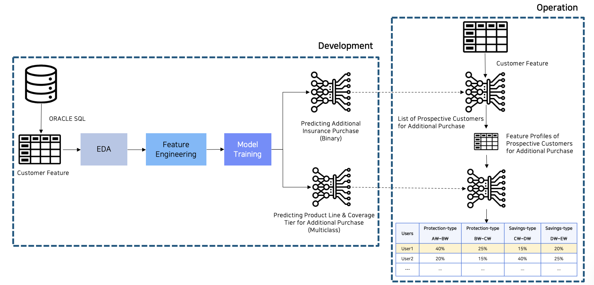

System architecture — Development & Operation pipeline
Overview
Deployed as a contractor from Ellexi to Kyobo Life Insurance, I built an end-to-end cross-sell prediction system to identify which existing customers were likely to purchase additional coverage — and what product line they'd be most likely to buy.
The engagement was conducted entirely within a closed, air-gapped network for security compliance — no internet access, no LLM assistance. All 1,000+ lines of Oracle SQL for constructing customer feature tables from raw transaction and policy data were written from scratch, followed by full EDA and feature engineering.
Two models were trained in parallel: a binary classifier to predict whether a customer would make an additional purchase, and a multiclass classifier to predict the specific product line and coverage tier. Coverage tiers are defined as premium bands in Korean Won (e.g. A만원~B만원), spanning Protection-type and Savings-type product lines. In operation, the system outputs a ranked prospect list with per-tier purchase probabilities for each customer. Forward testing against real subsequent purchases confirmed a measurable revenue lift.
Results
Confirmed revenue liftForward-tested
Stack
Oracle SQLXGBoostLightGBMCatBoostEDAFeature Engineering
Takeaways
Class imbalance is a much bigger deal in production than in textbooks
Real customer data is heavily skewed. Handling imbalance isn't a footnote. It shapes every modeling decision.
When hypothesis validation yields unexpected results, audit the validation process first
Surprising results usually point to a flaw in the evaluation setup, not the hypothesis. Check the pipeline before abandoning the assumption.
Communication throughout the modeling process matters more than model performance
Stakeholders need to trust and act on the output. The ability to explain assumptions, limitations, and results clearly is what makes a model useful in production.
Choose the right correlation method based on feature and target types
Numerical-to-numerical, categorical-to-numerical, categorical-to-categorical: each requires a different statistical test. Using the wrong one silently misleads feature selection.
Precision vs. recall trade-off is defined by the business problem, not the F1 score
For cross-sell, missing a high-intent customer (low recall) costs revenue. Spamming uninterested customers (low precision) costs trust. The right balance is a product decision, not a metric one.
SQL query tuning is a deep skill when data lives behind Oracle at scale
With 1,000+ lines of feature SQL on a closed network, query execution time directly blocked iteration speed. Understanding indexes, execution plans, and join strategies became essential.